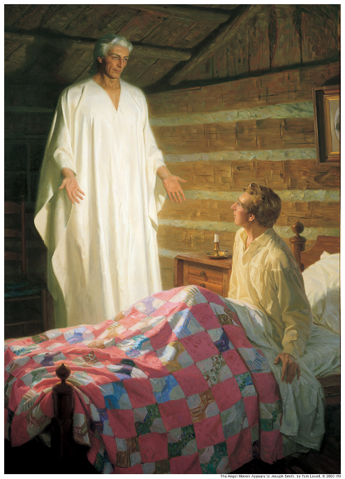

The Book of Mormon came into the world through a series of miraculous events. Much of what we know about its origins is found through careful study of the records produced by Joseph Smith, his scribes, and others closely related to its translation.
Joseph Smith reported that on the evening of September 21, 1823, an angel who called himself Moroni appeared. He informed Joseph that “there was a book deposited, written upon gold plates, giving an account of the former inhabitants of this continent, and the source from whence they sprang.” The book could be found in a hill not far from the Smith family farm.
The angel charged Joseph Smith to translate the book from the ancient language in which it was written. The young man, however, had very little formal education and was incapable of writing a book on his own, let alone translating an ancient book written from an unknown language, known in the Book of Mormon as “reformed Egyptian.”